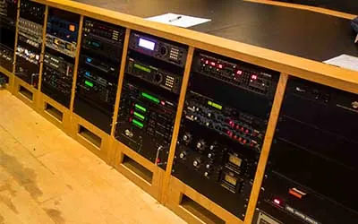
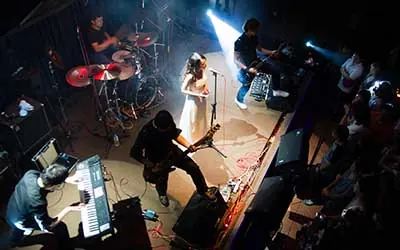
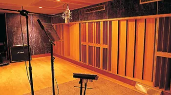
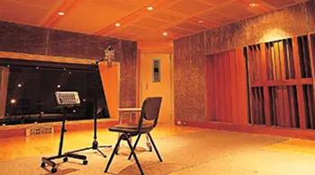
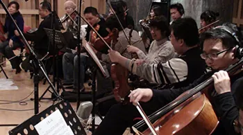

We are MEGAFORCE
你知道你所聽過的國語歌曲，有一半都有強力的身影嗎?自1991年來，強力錄音室深耕音樂產業幕後，不僅已打造數千張專輯，也取得數百座金曲獎的肯定。強力錄音室嚴然成為華語流行音樂不可或缺的一部份，這傲人的成績來自於我們豐富的製作經驗以及對於品質的要求，除了投資上億元購買設備並禮聘英國聲學大師Andy Munro打造獨一無二的五間專業錄音室，這包括兩間大型混音室及三間錄音室，無論執行配唱、和聲、小型管弦樂團、大型LIVE的錄混音，強力錄音室都能夠滿足每個製作人挑剔的雙耳。

Why choose Us.最專業的錄音室
Andy Munro大師設計優化的聲學空間、經典的類比SSL 4k系列Console、Neumann等各式經典麥克風、類比Outboard幾檯一應具全，絕對可以讓原創作品呈現最佳效果

Our Mission.華語音樂的守護者
除了製作眾多膾炙人口的華語歌曲外，強力錄音室定期舉辦大師班與研討會，堅持基礎工程技術必須根留台灣，讓新一代的工程師延續音樂使命，繼續為下一個25年的音樂人創造更多經典。
What we Do.製作群量身打造
無論您是製作人僅單純要錄音室租借，亦或是本身為獨立歌手希望有製作人統籌發行專輯挑戰金曲獎，強力完整的陣容與業界人脈，都可以助您一臂之力。
錄音總時數
混音作品
錄製專輯張數
金曲獎
客戶作品
多如繁星的暢銷金曲在此誕生，期待能夠與您共創下一個金曲盛世。(在此僅節錄部分作品)


![《【下一站，天后】自選+精選》 本專輯是歌手丁噹發行的第4張專輯，2010年7月9日由相信音樂發行，其中收錄了10首自選歌曲、9首從2007年的《離家出走》專輯到2009年的《夜貓》專輯中選出的經典歌曲及1首新歌〈Fu Good〉。此張專輯的製作人包含了五月天阿信、馬毓芬、阿弟仔及朱敬然[1][2]。第一波主打歌即為翻唱趙傳的〈我是一隻小小鳥〉，此曲是當初丁噹在第六屆《超級星光大道》踢館時所演唱並且拿下24分高分的歌曲。第二波主打歌〈洋蔥〉（原唱為楊宗緯）更成為了KKBOX2010年點播率第一名。 強力 宮房 SSL Console + Outboards 錄音師兼混音師 陳文駿 五月天阿信、馬毓芬、阿弟仔及朱敬然 丁噹 下一站天后, Album,相信音樂](images/items/19.webp){kind=link}


製作團隊簡介
眾多金曲老師傾力協助，讓您夢想不再遙不可及。"沒有音樂，生命是沒有價值的" —— 尼采
服務項目與環境簡介
擁有上億元打造的三間國際級聲學錄音室與兩間混音室的強力，可以為您規劃與安排適合您的製作方式，提供您與天王天后相同等級的製作團隊服務。而除了錄音室出租，只要跟音樂工業相關，舉凡詞曲版權代購、ISRC註冊、編曲、錄音、混音、母帶後期、壓片印刷到實體上架發行，強力錄音室都提供您全方位的諮詢服務。中型錄音室 宮房(Gōng Room)

以AVID Protools HD硬碟錄音系統，搭配16軌數位控制界面為基礎，搭配三套不同形式的監聽以及數十台Outboards，無論是在數位的錄音、剪輯，或是混音工作，皆提供了更大的便利性。 宮房也是強力最受歡迎的Vocal Tracking Room之一。 在國際級錄音室設計大師Andy Munro所規劃的Studio空間裡，其實適合的收音項目不只是配唱而已。木吉他與電吉他等獨奏樂器，都能收錄出意想不到的美聲！ Mr. Munro本人表示，此Control Room已經有近20年的設計歷史，歷經時間焠鍊，不論是型式或聲學反應，均是他最滿意的設計之一。多功能錄混音室 商房(Shāng Room)
同時具備收音及混音兩項功能。 配備SSL G-Plus最新版本的SE混音Console， 搭配AVID Protools HD硬碟錄音系統， 再加上豐富的Outboards， 執行錄音混音工作游刃有餘。 其Studio面積為宮房Studio的兩倍以上， 以Live Drum 規模以下的錄音而言， 再加上Control Room的混音等級配備， 錄音成果絕對令人讚賞！
中型錄音室 角房(Jué Room)

Control Room的面積及聲響特性， 具備與宮房相同的規格， 本房的另一項特色在於 與商房共同使用一間Studio。 因此在收音的項目上，可與商房等量齊觀。 同樣使採用AVID Protools HD硬碟錄音系統， 使得工作項目從Vocal Tracking，Instrument Dubbing，延伸至Live Drum Tracking…等，提供客戶在錄音的項目上，有著相當大的使用彈性與便利。旗艦混音室 徵房(Zhǐ Room)
強力的旗艦混音房。 配備SSL 頂級混音Console 9000J， 以及AVID Protools HD， 搭配各式的Outboards，絕對是要求聲音細節的製作人唯一首選，由此房混音完成的暢銷歌曲已數千首，也是許多是知名混音師如王俊傑(K哥)最愛的混音室。
大型錄音室 羽房(YǔR Room)

強力最大的錄音室。 Control Room的容積與聆聽系統，與商房及徵房兩間混音室相同，滿足錄音師對細節的挑替。20.1坪大的收音空間，其設計之殘響值約為0.35秒，適合各類編制之樂器及人聲之收錄。Studio內還額外設計5坪大的隔音Booth，使得Live Band等大型錄音工作，成為本房最大的強項。 其完整的收音空間，堪稱台灣之最。以AVID Protools HD為標準錄音系統。不論是針對Live重視音色的現場收音，還是使用電腦的非線性剪輯，工作起來都相當得心應手。 附記： 對抗SARS期間，「音樂」成為人們心靈最大的支持力量！ 強力的羽房，見證了台灣音樂人的愛心與空前的團結﹔歌手王力宏和陶喆，號召許多藝人一同合唱「手牽手」的同時，也見證了強力對於唱片界及國人的支持！詞曲版權
Compose
需要各個唱片公司的作曲者幫您量身打造獨一無二的專屬歌曲嗎？強力可安排執行製作人為您舉辦選歌會，量身打造整張專輯。
編曲
Arrange
無論是EDM到搖滾、爵士到流行，各種曲風我們都可以幫您發編給業界知名編曲師為您編曲，就讓編曲老師的雙手來演繹出您腦海中的完美音符吧！
錄音
Recording
三間不同尺寸的配唱室(Tracking Room)供您選擇，AKG, Neumann等各式經典麥克風，音箱與Sony Console以及NEVE1073, RED 1等經典前級、Tube-Tech CL1B, 1176, LA-3A等經典壓縮器任您調用。
>>器材列表
母帶後期處理
Mastering
一應具全的各式設備與4組標準間聽喇叭，可以模擬不同環境，滿足您對母帶的要求，而身經百戰的專業母帶工程師將協助您作品更臻完美
混音
Mixing
頂級的SSL 4k Console以及各式經典Outboards，滿足每個混音師對於類比混音的各式需求。而您也可以指定您想要的天王天後御用混音師，由強力為您安排相關事宜。
>>器材列表
上架發行
Published
我們有配合的唱片公司可以為您的作品進行實體上架發行，而我們也可以代為註冊ISRC以保障您完整的著作權。
文化傳承
Open House
半年舉辦一次的Open House，歡迎20人以上學校等機關團體預約，現場將準備錄音互動體驗以及唱片工業簡介。 >>最新時段歡迎來信詢問
直播
Live Video
想做直播嗎？強力已有多組藝人、樂團以及混音師在此進行過直播，與粉絲零距離互動，無論是練團、彩排、錄音幕後花絮等等內容，強力都可以提供直播方案。
>>查看直播相關資訊
課程／研討會
Conference
由強力音樂主辦，邀集業界第一線優秀工作者們共同設計的音樂職人養成系統。專門針對「聲音工程」去仔細規劃相關課程，希望傳承給新一代音樂人才
>>查看最新課程
收費方式
強力錄音室為不同階段的藝人準備不同的方案，無論您是業界資深製作人、實力派歌手，或是獨立歌手、網紅，強力竭誠歡迎您的蒞臨與洽談，讓您的作品更臻完美，並在您的音樂旅途上助您一臂之力。新客戶導覽*
歡迎新客戶預約導覽現場了解強力環境
- 專人導覽與解說
- 專輯錄音規劃
- 歡迎新客戶預約
A.硬地方案
儘管創作，錄音的事通通交給我們!- 含錄音師
- 最經濟實惠的價格支持音樂創作者
- 免費Wifi與現煮咖啡
B.單曲製作專案
已有Demo作品團隊量身打造完美金曲
- 量身打造新單曲(含完整編曲)
- 含和聲編寫、配唱
- 8小時主唱錄音
- 包含完整後製(剪輯、音準與混音)
- 含錄音師、混音師與製作人
- 免費Wifi與現煮咖啡
C.配唱專案
發片規格製作適合已經有完整編曲的創作歌手
- 6小時主唱錄音
- 包含完整後製(剪輯、音準與混音)
- 含錄音師、混音師與配唱製作人
- 免費Wifi與現煮咖啡
D.配唱製作人
掌控配唱進度提升工作效率
（此為加購產品，適合搭配硬地方案使用）
- 8小時專業配唱
- 免費Wifi與現煮咖啡
客製方案
找不到適合您的方案嗎？- 歡迎填寫洽詢
- 製作團隊量身打造適合的方案
- 當然有免費Wifi與現煮咖啡
**所有包套價格限不指定錄混音師，若需指定特定老師可能會產生額外費用，將另行報價。
***快速混音(Rough Mix)無法當天出檔，將以電子方式寄送混音檔。
****超時零租一律為1500/hr